USER TENSION
Why collect information about a child before learning begins?
Age and English proficiency are collected to match each child with suitable content and recommend the right course level.
ANCHOR CASE · SENIOR UX / OVERSEAS EDTECH
Jiligaga serves children aged 2–8 overseas. I reframed onboarding from a registration step into preparation for the first lesson, then tracked sign-up, lesson entry, completion, and D3 / D7 returns from V1.5 onward. Every iteration answered the same question: why would a child want to keep learning?
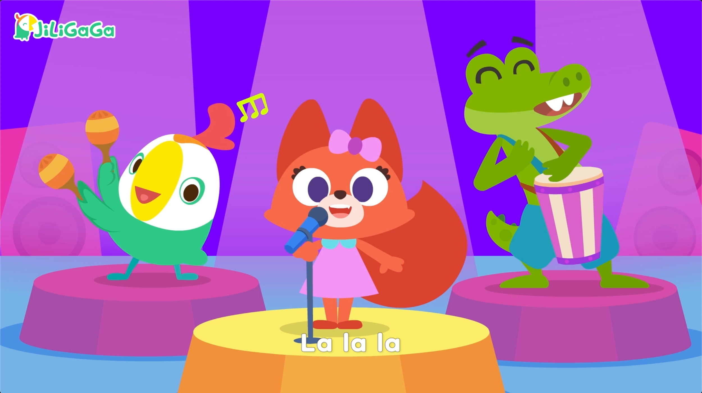
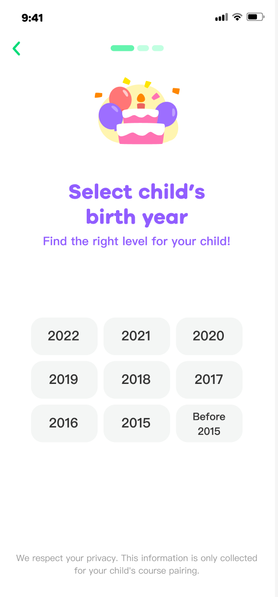
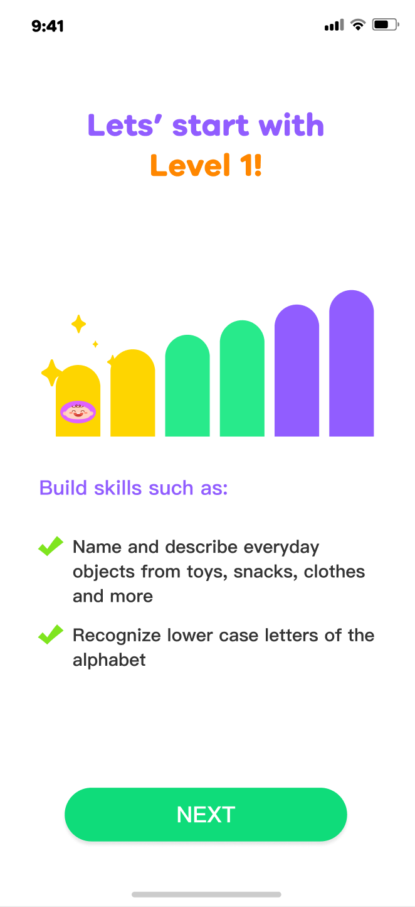
01 / CONTEXT & TENSION
Parents needed to understand why information was collected, children needed to feel the course value quickly, and the early-stage business needed more families to reach a first lesson.
USER TENSION
Age and English proficiency are collected to match each child with suitable content and recommend the right course level.
BUSINESS TENSION
Jiligaga was still in an early market-expansion stage. Getting families into a lesson and helping them understand the product mattered more than charging them first.
DESIGN TENSION
The real problem was not removing a few screens. It was creating continuity from entry point and data purpose to level recommendation and first-lesson value.
02 / RESEARCH → DECISION
Evidence came from four Taiwanese family interviews, competitor onboarding research, and funnels from V1.6–V1.10. Together they pointed to one move: explain value and data purpose before sending users into the first lesson.
The interview sample included four families. Version data is a directional comparison with concurrent variables; it locates problems and guides iteration, but does not establish strict causality.
Across four Taiwanese families, children responded more positively to game interactions than videos, while parents valued teaching-intensive activities such as writing and speaking.
Therefore:Put course value into learning activities that are interactive and responsive.Beginners found the content appropriate, while experienced learners found the same content too easy.
Therefore:Combine age and English proficiency to recommend a level, then explain the rationale and learning outcomes.Competitor onboarding averaged four steps and about 1 minute 45 seconds, but Jiligaga was still acquiring its earliest users under a different business model.
Therefore:Do not copy a pay-first funnel; shorten the route to a lesson and communicate course value earlier.V1.10 onboarding improved 15.86% over V1.9, but the age screen still lost 7% of users and did not explain progress or data purpose.
Therefore:Explain the purpose before asking for age and set clear expectations for the flow.ONBOARDING ANALYSIS · V1.6 → V1.10
The Have an Account click rate rose from 4% to 15%. Combined with roughly 10% loss at the start of sign-up, we treated this as a routing signal rather than a growth result. V1.10 therefore clarified the new-user path, explained data purpose, and recommended a level directly by age.
Have an Account click-through rate
V1.6 → V1.8 · behavioral signal, not growthAndroid Onboarding
V1.10 Android only · at least +15pp · stage floor reachediOS baseline / target range
Target pending validation · not a launch resultEvidence boundary4% → 15% reflects only account-entry clicks. iOS 87%–90% and Android 79%–85% are target ranges. Only Android V1.10 is confirmed at the 79% stage floor; 60% comes from internal competitor research and is directional.
BEFORE · expectations interrupted
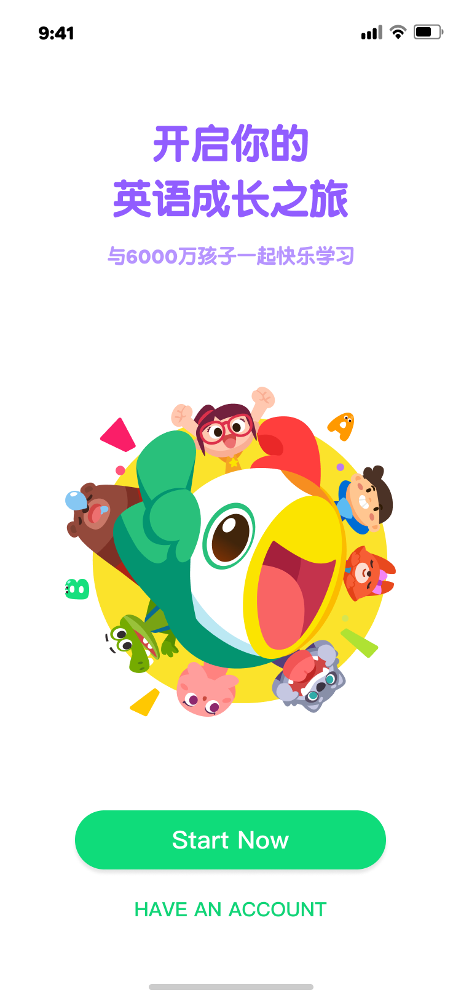
The account entry competed with the main new-user action on the same screen.
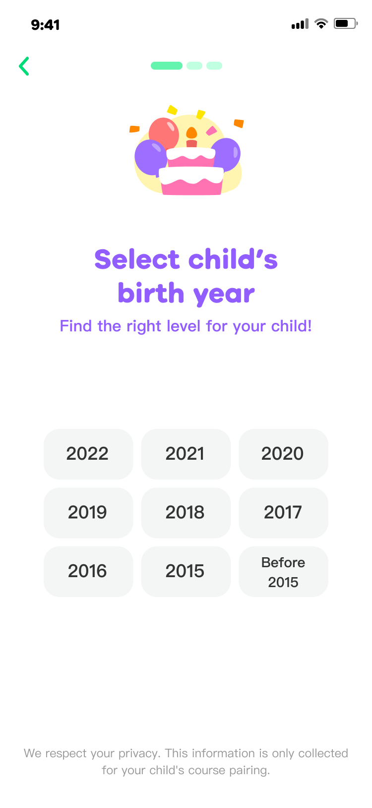
Information was requested immediately after Start, adding calendar-conversion effort.
AFTER · recommendation path
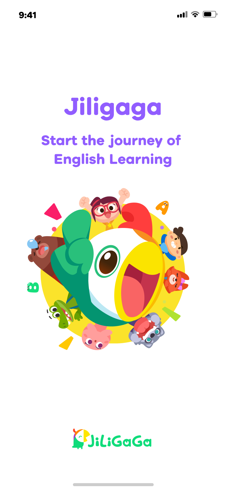
Focus on the brand and English-learning journey instead of competing entry points.
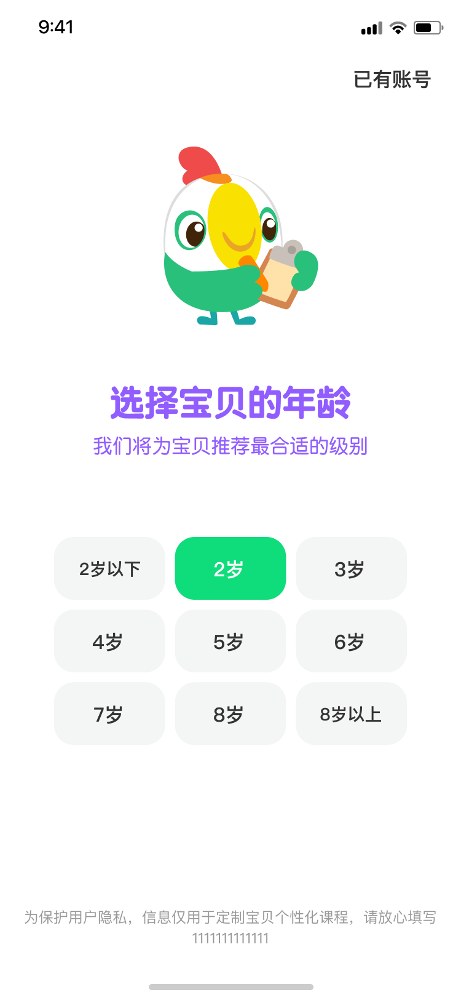
Select age directly and explain that it is used to match the right level.
Keep Have an Account without placing it beside the primary new-user path.
About 60% of internally reviewed competitors selected age directly, providing a directional alternative to calendar conversion.
Explain the data purpose before entering the corresponding course level.
03 / DATA LOOP · V1.5+
From V1.5 onward, Product, Data, and I tracked a complete funnel rather than a single onboarding conversion: product entry, sign-up, lesson entry, completion, and completed return lessons on D3 and D7.
The funnel showed that users could finish a first lesson, but numbers contracted sharply from day three. The question shifted from whether they could start to whether a clear rhythm could turn one experience into continuous learning.
04 / VALUE OPPORTUNITY
Optimize media and channel strategy
Opportunity share14%Optimize sign-up and login
Opportunity share11%Improve recommendation and content appeal
Opportunity share10%Improve first-lesson guidance
Opportunity share36%Improve learning rhythm and reminders
Opportunity share29%Build long-term motivation and habits
Opportunity share—We stopped treating optimization as isolated screens and reframed one completion as an ongoing learning journey: solve entry and recommendation first, then connect lesson entry, completion, and D3 / D7 returns.
Device coverage: iOS / Android / iPad
Opportunity share comes from funnel diagnosis and version reviews. It prioritizes iteration and is not a strict causal claim for any single feature.
05 / STRATEGY
Phase 1：Sign-up and understanding
Phase 2：Learning and continuity
Part 1 · Visual and information upgrade
This was not a reskin. It reworked product positioning, information hierarchy, and the route into a course.
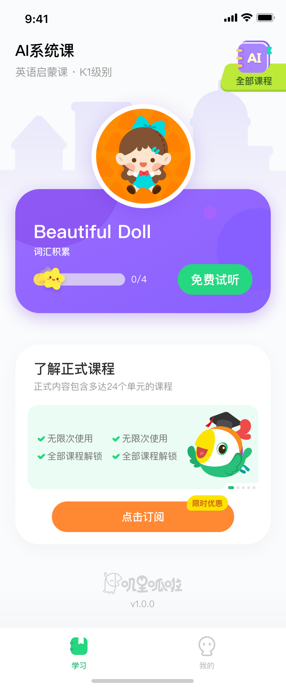
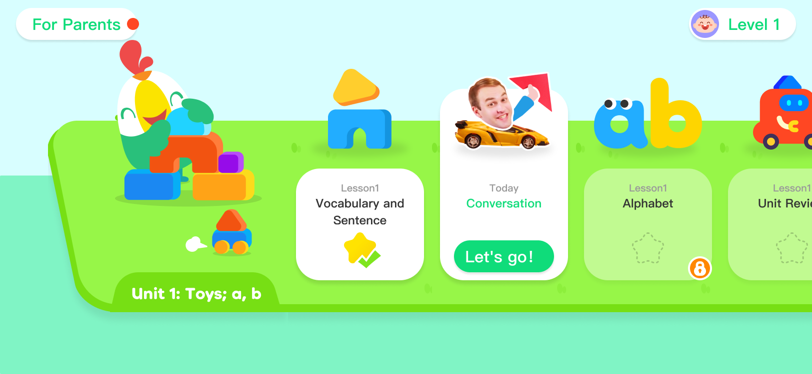
Using Lingokids, Khan Kids, and local family profiles as references, we repositioned the product from online courses to an educational digital toy, with a horizontal level map and full-screen interaction standards.
Visual research in Taiwan showed that the original high-saturation style did not build local trust, so the system shifted to pastel green, rounded type, and friendlier character language.
Connect off-site ads, in-app claims, LINE retention, and subscription paths, while using skeleton states to reduce abandonment during loading.
Part 2 · Learning rhythm and return motivation
After the first lesson, generate a weekly mission so daily progress, streak challenges, and completion rewards lead into the next visit.
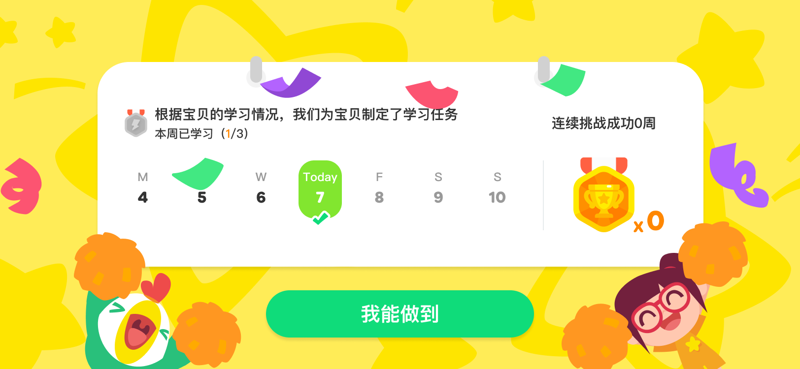
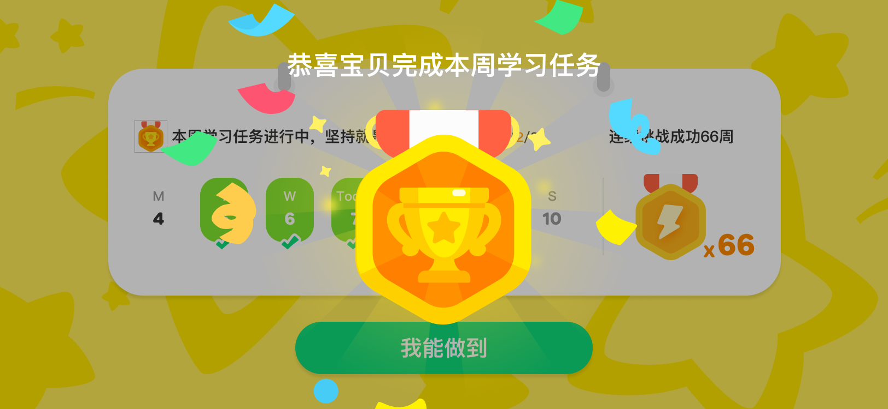
A seven-day calendar, Today state, and weekly progress show children and parents exactly where they are.
Medals, ribbons, and a completed state acknowledge effort and turn abstract progress into a tangible reward.
Visible streak weeks and medal totals keep the next goal in view and create a clear trigger for D3 / D7 returns.
SUMMARY · DESIGN PRINCIPLE